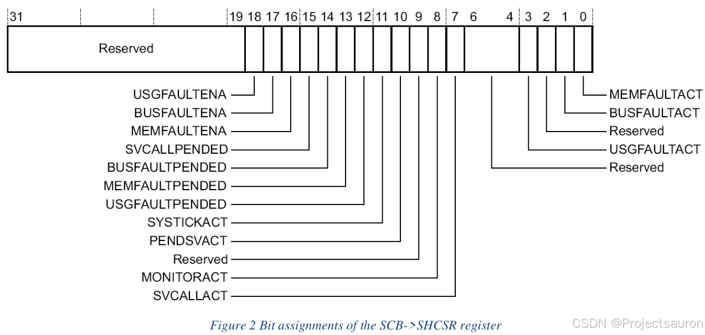

Cortex-M3/M4/M7 芯片 Fault 分析原理与实战
[toc]
一、简介
1、异常类型
HardFault（硬件错误）是一类在嵌入式系统开发中较为常见的系统异常，优先级仅低于复位和 NMI（不可屏蔽中断）。当系统运行过程中遇到了某些错误时程序就会跳转至 HardFault_Handler 函数中，引发程序故障进而影响程序的正常运行。
一般而言，我们遇到的错误有如下几种：
HardFault（硬件故障）：默认异常，由于异常处理过程中的错误或由于任何其他异常机制无法管理异常而触发。MemManage（内存管理故障）：检测内存管理单元(MPU)中定义的区域的内存访问违规；例如，在一个只有读/写访问权限的内存区域中执行代码。BusFault（总线故障）：在指令取指、数据读/写、中断向量取指和寄存器入栈(保存/恢复)中断(进入/退出)时检测内存访问错误。UsageFault（使用故障）：检测未定义指令的执行，加载/存储多个未对齐的内存访问。启用时，将检测除 0 和其他非对齐内存访问。
2、异常优先级
每个异常都有一个相关联的异常号和一个相关联的优先级号。为简化软件层，CMSIS 只使用 IRQ 编号，因此对中断以外的异常使用==负值==。下表按优先级顺序列出故障异常：
| Exception | Exception Number | 优先级 | IRQ Number | 激活方式 |
|---|---|---|---|---|
HardFault |
3 | -1 | -13 | - |
MemManage fault |
4 | 可配置 | -12 | 同步 |
BusFault |
5 | 可配置 | -11 | 精确时同步，不精确时异步 |
UsageFault |
6 | 可配置 | -10 | 同步 |
由这张表可以看出，HardFault 异常总是启用的，并且具有固定的优先级(高于其他中断和异常，但低于不可屏蔽中断 NMI)。因此，在禁用故障异常或在执行故障异常处理程序期间发生故障的情况下，将执行 HardFault 异常。通过下面的例子来理解一下这段话。
在 stm32f4xx_it.c 文件中有如下几个中断服务程序：
1 | |
以 MemManage_Handler 为例，如果你没有使能这个中断的话，那它肯定也不会进入这个中断，而是会进入 HardFault_Handler，也就是硬件异常！这也是下面要讲的==优先级提升==。
而所有其他故障异常(MemManage fault、Bus Fault 和 Usage Fault)都具有可编程优先级。重置后，这些异常被禁用，可以在系统或应用软件中使用系统控制块(SCB)中的寄存器启用。
通常，异常优先级和异常掩码寄存器的值一起确定处理器是否进入错误处理程序，以及错误处理程序是否可以抢占另一个错误处理程序。在某些情况下（例如刚才的例子），具有可配置优先级的故障被视为 Hard Fault。这被称为==优先级提升==，即故障升级为 HardFault。升级到 HardFault 发生在：
- 当一个 Fault 触发时，并再次触发相同的 Fault。之所以会升级到
HardFault，是因为处理程序不能抢占自己（它必须具有与当前优先级相同的优先级）。 - 当一个 Fault 执行时，有一个优先级比它低或者同级的 Fault 被触发。因为新错误的处理程序不能抢占当前执行的错误处理程序。
- 当一个（普通的）中断在执行的时候，有一个优先级比它低或者同级的（普通的）中断触发了 Fault。
- 发生了 Fault，但未启用该错误的处理程序（上面介绍过的例子）。
如果在入栈过程中进入 BusFault handler 时发生 BusFault，BusFault 不会升级为 HardFault。这意味着，如果崩溃的栈导致了错误，即使处理程序的入栈失败，也会执行错误处理程序。错误处理程序正常运行，但栈内容已损坏。
注意：只有 ==Reset==(复位中断) 和 ==NMI==(不可屏蔽中断) 可以抢占固定优先级的
HardFault。HardFault可以抢占除 Reset、NMI 或其他 HardFault 之外的任何异常。如下图所示：
3、同步异步问题
BusFault 错误处理程序可以使用 BFSR 来确定错误是异步的(IMPRECISERR，不精确的)还是同步的(PRECISERR，精确的)。
同步总线故障也被称为精确总线故障。何谓精确？就是总线触发异常之后，我们可以找到它触发异常的地址。如果同步总线故障发生在 NMI 或 HardFault 处理程序内，则会升级为锁定。缓存维护操作也可能触发总线故障。调试访问也可能触发总线故障。调试器的加载或存储访问是同步的，并且仅对调试器接口可见。
异步总线故障被称为为不精确总线故障，同理，就是总线触发异常之后，我们不能找到它触发异常的地址。它可能发生在处理器设计中存在写缓冲时。因此，在观察到总线错误响应之前，处理器流水线会继续执行后续的指令。当异步总线故障被触发时，总线故障异常被挂起。如果另一个高优先级的中断事件同时到达，则首先执行高优先级的中断处理程序，然后发生 BusFault。如果总线故障处理程序未启用，则挂起 HardFault。由异步总线故障引起的硬故障不会升级为锁定。异步错误==通常是不可恢复的==，因为你不知道是哪段代码导致了错误。
现代的芯片都是多级流水线执行的，它触发的时候，多级流水线人在执行，我们无法锁定是哪一级出了问题，也就无法找到精确的错误地址。
4、异常具体类型
下表中列出了 Fault 类型、Fault Handler、Fault status register 和故障发生的寄存器位名：
HardFault-HFSR
| Fault type | Bit Name |
|---|---|
| Bus error on a vector read error | VECTTBL |
| Fault that is escalated to a hard fault | FORCED |
| Fault on breakpoint escalation | DEBUGEVT |
MemManage-MMFSR
| Fault type | Bit Name |
|---|---|
| Fault on instruction access | IACCVIOL |
| Fault on direct data access | DACCVIOL |
| Context stacking, because of an MPU access violation | MSTKERR |
| Context unstacking, because of an MPU access violation | MUNSTKERR |
| During lazy floating-point state preservation | MLSPERR |
BusFault-BFSR
| Fault type | Bit Name |
|---|---|
| During exception stacking | STKERR |
| During exception unstacking | UNSTKERR |
| During instruction prefetching, precise | IBUSERR |
| During lazy floating-point state preservation | LSPERR |
| Precise data access error, precise | PRECISERR |
| Imprecise data access error, imprecise | IMPRECISERR |
UsageFault-UFSR
| Fault type | Bit Name |
|---|---|
| Undefined instruction | UNDEFINSTR |
| Attempt to enter an invalid instruction set state | INVSTATE |
| Failed integrity check on exception return | INVPC |
| Attempt to access a non-existing coprocessor | NOCPC |
| Illegal unaligned load or store | UNALIGNED |
| Stack overflow | STKOF |
| Divide By 0 | DIVBYZERO |
下面就来看一下这些寄存器。
二、Fault exception registers
1、Control registers
系统控制块(SCB)提供系统实施信息和系统控制。这包括系统异常的配置、控制和报告。它的一些寄存器用于控制 Fault 异常。
这里有三个寄存器：
CCR（The Configuration and Control Register，配置和控制寄存器），控制Usage Fault的除零和非对齐内存访问的行为SHP（The System Handler Priority Registers，系统处理程序优先级寄存器），控制异常优先级SHCSR（The System Handler Control and State Register，系统处理程序控制和状态寄存器），使能系统处理程序，表示Bus Fault、MemManage fault和 SVC异常的待处理状态。
| Address / Access | Register | Reset Value | Description |
|---|---|---|---|
| 0xE000ED14 RW privileged |
CCR | 0x00000000 | 包含捕获与 UsageFault 的除零和非对齐访问的启用位 |
| 0xE000ED18 RW privileged |
SHP[12] | 0x00 | 控制异常处理器的优先级 |
| 0xE000ED24 RW privileged |
SHCSR | 0x00000000 | 表示硬故障原因的位 |
1.1 CCR
DIV_0_TRP：在处理器执行除数为 0 的SDIV或UDIV指令时启用Usage Fault- 0：除 0 不触发；除以 0 得到的商是 0
- 1：除 0 触发
UNALIGN_TRP：当对非对齐地址进行内存访问时，启用Usage Fault：- 0：不捕获非对齐的半字和字访问
- 1：捕获非对齐的半字和字访问；非对齐访问会产生
Usage Fault - 请注意，使用
LDM、STM、LDRD和STRD指令的非对齐访问总是会产生Usage Fault，==即使UNALIGN_TRP设置为 0==
1.2 SHP
SHP 寄存器设置异常处理程序的优先级。故障异常通过以下方式控制：
SHP[0]：内存管理故障的优先级SHP[1]：总线故障的优先级SHP[2]：Usage Fault的优先级
对于编程中断和异常优先级，CMSIS 提供了 NVIC_SetPriority 和 NVIC_GetPriority 函数。故障异常的优先级可以修改如下:
1 | |
函数原型如下：
1 | |
1.3 SHCSR

SHCSR 寄存器的以下几位属于异常：
- MEMFAULTACT：
Memory Management Fault激活位，如果异常被激活则为1。 BUSFAULTACT：Bus Fault激活位，如果异常被激活则为 1。USGFAULTACT：Usage Fault激活位，如果异常被激活则为 1USGFAULTPENDED：Usage Fault待定位，如果异常待定，则为1MEMFAULTPENDED：Memory Management Fault待定位，如果异常待定，则为1。BUSFAULTPENDED：Bus Fault待定位，如果异常待定，则为1。MEMFAULTENA：Memory Management Fault启用位，设置为 1 表示启用；设置为 0 表示禁用。BUSFAULTENA：Bus Fault使能位，设为 1 为使能；设置为 0 表示禁用。USGFAULTENA：Usage Fault启用位，设置为 1 表示启用；设置为 0 表示禁用。
虽然可以写入 SHCSR 寄存器的所有位，但在大多数软件应用程序中，只有向启用位写入才有意义。Memory Management Fault、Bus Fault 和 Usage Fault 可以通过以下语句启用：
1 | |
2、Status and address registers
下表列出了故障状态寄存器和故障地址寄存器的名称，并列出了每个寄存器的内存地址：
| Handler | Status Register | Address Register | Address | Description |
|---|---|---|---|---|
| HardFault | HFSR | 0xE000ED2C | HardFault Status Register | |
| MemManage | MMFSR | MMFAR | 0xE000ED28 0xE000ED34 |
MemManage Fault Status Register MemManage Fault Address Register |
| BusFault | BFSR | BFAR | 0xE000ED29 0xE000ED38 |
BusFault Status Register BusFault Address Register |
| UsageFault | UFSR | 0xE000ED2A | UsageFault Status Register | |
| AFSR | 0xE000ED3C | Auxiliary Fault Status Register. Implementation defined content | ||
| ABFSR | 0xE000ED3C | Auxiliary BusFault Status Register. Only for Cortex-M7 |
2.1 HardFault Status Register——HSFR

VECTTBL：表示在异常处理期间读向量表的总线故障：- 0：向量表读无总线故障
- 1：向量表读取时的总线故障
- 当这个比特位被设置时，异常返回的 PC 值指向被异常抢占的指令。这种错误总是一个
Hard Fault
FORCED：指示强制硬故障，由具有可配置优先级的故障升级由于优先级或已禁用无法处理而生成:- 0：无强制
Hard Fault - 1：强制
Hard Fault - 在设置该比特位时，
Hard Fault Handler必须读取其他故障状态寄存器，以查找故障的原因。
- 0：无强制
DEBUGEVT：保留用于调试。当写入寄存器时，==必须将该位写入 0==，否则行为将不可预测。
2.2 Configurable Fault Status Register——CFSR
CSFR 寄存器可以分为三种状态寄存器：Usage Fault、Bus Fault 和 Memory Management Fault。
2.3 MemManage Fault Status and Address Registers (MMFSR; MMFAR)
2.3.1 MemManage Status Register——MMFSR
IACCVIOL：非法指令访问标志:- 0：无指令访问违规故障
- 1：处理器试图从不允许执行的位置取指令。
- 异常返回时入栈的 PC 值指向故障指令。==处理器不会向 MMFAR 写入故障地址==。在任何尝试取指令到 XN (eXecute Never）区域时都会发生此故障，即使 MPU 被禁用或不存在。潜在的原因如下：
- 跳转到 MPU 中未定义或定义为不可执行的区域。
- 由于栈内容损坏而无效返回。
- 异常向量表中不正确的条目。
DACCVIOL：非法数据访问标志:- 0：无数据访问违规故障
- 1：处理器试图读取或存储到不允许操作的位置。
- 异常返回时入栈的 PC 值指向故障指令。处理器会将出错的访问地址记录到 MMFAR。
MUNSTKERR：对返回的异常进行出栈时发生的MemManage错误：- 0：无出栈故障
- 1：对异常返回的出栈导致了一个或多个访问违规。
- 此错误链接到处理程序，这意味着原始返回堆栈仍然存在。处理器没有从失败的返回中调整 SP，也没有执行新的保存。处理器未向 MMFAR 写入故障地址。潜在的原因：
- 栈指针崩溃
- 栈的 MPU 区域在异常处理程序执行期间发生变化。
MSTKERR：异常项入栈时的MemManage错误：- 0：无入栈故障
- 1：异常项入栈导致了一个或多个访问违规。
- SP 仍然被调整，但栈上上下文区域的值可能是不正确的。处理器未向 MMFAR 写入故障地址。潜在的原因：
- 栈指针崩溃或未初始化
- 栈到达一个未被 MPU 定义为读/写内存的区域。
MLSPERR：浮点lazy state保存期间的 MemManage 故障(仅适用于带有 FPU 的 Cortex-M4)：- 0：浮点
lazy state保存过程中没有发生错误 - 1：浮点
lazy state保存时发生故障lazy state：有时候，浮点寄存器为了加速操作，它有些时候可以选择不主动入栈，有时候可以自动入栈
- 0：浮点
MMARVALID：MemManage Fault地址寄存器(MMFAR)有效标志：- 0：
SCB->MMFAR中的值不是有效的故障地址 - 1：
SCB->MMFAR保存的是有效的故障地址。 - 如果发生
MemManage Fault，并且由于优先级的原因升级为Hard Fault，HardFault 处理程序必须将该比特位设置为 0。这防止了在返回入栈的 active MemManage 故障处理程序时，SCB->MMFAR值被覆盖的问题。
- 0：
2.3.2 MemManage Address Register——MMFAR
BFAR 地址与精确数据访问总线故障关联。只允许特权访问。==非特权访问产生总线错误==。
ADDRESS：MemManage Fault的数据地址。该寄存器被更新为产生MemManage Fault的位置的地址。MMFSR 显示故障原因。该字段仅在MMFSR 时有效。设置MMARVALID。在没有唯一 BFAR 和 MMFAR 寄存器的实现中，如果是 BFSR，则该寄存器的值是未知的。设置BFARVALID。
2.4 BusFault Status and Address Register (BFSR; BFAR)
2.4.1 BusFault Status Register——BFSR
总线故障状态寄存器（BFSR）显示由指令获取和数据访问导致的总线错误的状态，并指示在总线操作期间检测到的内存访问故障。只允许特权访问。==非特权访问将产生总线故障==。
IBUSERR：指令总线错误。记录指令预取是否发生总线故障。- 0：没有指令总线错误
- 1：指令总线错误。
- 处理器在预取指令时检测到指令总线错误，但只有在试图发出错误指令时，它才将
IBUSERR标志设置为 1。当处理器设置该比特位时，它不会向 BFAR 写入故障地址。潜在的原因：- 跳转到无效的内存区域，例如由不正确的函数指针（比如野指针）引起的。
- 由于栈指针崩溃或栈内容损坏而无效返回（返回地址出错）。
- 无效的中断向量表条目（地址）。
PRECISERR：精确的数据总线错误：- 0：没有精确的数据总线错误
- 1：一个数据总线错误已经发生，并且为异常入栈的 PC 值返回到导致故障的指令。
- 当处理器设置该位时，它将==异常地址==（不是数据地址）写入 BFAR。
IMPRECISERR：不精确的数据总线错误:- 0：没有不精确的数据总线错误
- 1：数据总线发生了错误，但栈帧中的返回地址与导致错误的指令无关。
- 当处理器设置该比特位时，它不会向 BFAR 写入故障地址。这是一个==异步==错误。因此：
- 如果在当前进程的优先级高于总线故障优先级时检测到总线故障，则总线故障变为待决状态，只有在处理器从所有高优先级进程返回时才变为活动状态。
- 如果在处理器进入不精确总线故障的处理程序之前发生了精确故障，那么处理程序将同时检测
IMPRECISERR设为 1 和精确故障状态位中的一个设为 1。
UNSTKERR：返回异常时出栈引发的Bus Fault:- 0：无出栈故障
- 1：返回异常时出栈导致一个或多个
Bus Fault。 - 这个错误被链接到处理程序。这意味着，当处理器设置该比特位时，原始的返回栈仍然存在。处理器不会从失败的返回中调整 SP，不会执行新的保存，也不会向 BFAR 写入故障地址。
STKERR：异常项入栈引发的总线故障：- 0：无入栈故障
- 1：异常项的入栈导致了一个或多个
Bus Fault。 - 在处理器设置该比特位时，SP 仍然会调整，但栈上上下文区域的值可能是不正确的。处理器没有向 BFAR 写入故障地址。潜在的原因:
- 栈指针崩溃或未初始化
- 栈到达一个未定义的内存区域。
LSPERR：浮点lazy state保存期间的Bus Fault（仅当 FPU 存在时）：- 0：浮点
lazy state保存过程中没有发生错误 - 1：浮点
lazy state保存时发生故障
- 0：浮点
BFARVALID：总线故障地址寄存器(BFAR)有效标志:- 0：BFAR 中的值不是有效的故障地址
- 1：BFAR 保存了有效的故障地址。
- 在已知地址的
Bus Fault发生后，处理器设置该比特位。其他错误可能会将该比特位设置为 0，例如稍后发生的MemManage Fault。如果发生总线故障并由于优先级升级为Hard Fault，则Hard Fault Handler必须将该位设置为 0。
2.4.2 BusFault Address Register——BFAR
BFAR 地址与精确数据访问总线故障关联。只允许特权访问。非特权访问产生总线错误。
ADDRESS：精确总线故障的数据地址。用产生总线故障的位置的地址更新该寄存器。BFSR 表示故障原因。该字段仅在 BFSR 时有效。设置 BFARVALID。在没有唯一 BFAR 和 MMFAR 寄存器的实现中，如果是 MMFSR，则该寄存器的值是未知的。设置 MMARVALID。
2.5 UsageFault Status Register——UFSR
Usage Fault 状态寄存器 UFSR包含一些指令执行故障和数据访问的状态。只允许特权访问。非特权访问产生总线错误。
该寄存器分配了下列比特位：
UNDEFINSTR：未定义指令。- 0：未定义指令
- 1：处理器试图执行一条未定义的指令。
- 当该位被设置时，异常返回的 PC 值将指向未定义的指令。未定义指令是处理器无法解码的指令。潜在的原因：
- 使用 Cortex-M 设备不支持的指令。（比如在 M3 内核访问浮点指令就会报这个错）
- 错误或损坏的内存内容。
INVSTATE：无效的状态:- 0：没有无效状态
- 1：处理器试图执行一条指令，非法使用了执行程序状态寄存器(EPSR)。
- 当设置此位时，异常返回的 PC 值将指向试图非法使用 EPSR 的指令。潜在的原因：
- 加载分支目标地址到 PC, LSB=0。（现在使用的 M 内核都是 Thumb2 指令集，最后一位（LSB）一定是 1）
- Stacked PSR 在异常或中断处理期间损坏。
- 向量表包含一个 LSB=0 的向量地址。
INVPC：无效的 PC 加载错误，由无效的EXC_RETURN值引起:- 0：没有无效的PC负载
- 1：由于无效的上下文切换，处理器试图向 PC 加载一个非法的
EXC_RETURN值。 - 当该位被设置时，异常返回的 PC 值将指向试图执行非法加载 PC 的指令。潜在的原因：
- 由于栈指针、链接寄存器(LR)或栈内容损坏而导致无效返回。
- PSR 中的 ICI/IT 位对指令无效。
EXC_RETURN其实就是 LR 寄存器（R14）。它在中断之外（比如函数调用）表示返回地址；而在中断中表示EXC_RETURN，即异常返回。EXC_RETURN的位段含义见下表所示，之后该数值会在异常处理结束时触发异常返回。
| 位段 | 含义 |
|---|---|
| 31：4 | EXC_RETURN 标识符，默认全为 1 |
| 4 | 栈帧类型，1（8字）或0（26字） |
| 3 | 0（返回进处理模式） 1（返回进线程模式） |
| 2 | 0（返回后使用 MSP（主堆栈指针）） 1（返回后使用 PSP（任务堆栈指针）） |
| 1 | 保留，默认为 0 |
| 0 | 0（返回ARM状态） 1（返回 Thumb 状态） |
NOCP：没有协处理器。处理器不支持协处理器指令:- 0：no UsageFault，因为尝试访问协处理器而导致
- 1：处理器试图访问一个不存在的协处理器。
UNALIGNED：非对齐访问 UsageFault:- 0：no unaligned access fault，或 unaligned access trap not enabled
- 1：处理器进行了非对齐的内存访问。(使用硬件浮点后，硬件浮点的数据地址，一定是四字节对齐，否则会报这个错)
- 通过设置 CCR 中的
UNALIGN_TRP位来启用对非对齐访问的捕获。Unaligned LDM、STM、LDRD 和 STRD 指令总是错误，而不管UNALIGN_TRP位的设置。
DIVBYZERO：UsageFault:- 0：无除零故障，或除零陷阱未启用
- 1：处理器执行了一条除数为 0 的
SDIV或UDIV指令。 - 当处理器将该位设置为 1 时，异常返回的 PC 值将指向执行除数为 0 的指令。通过将 CCR 中的
DIV_0_TRP比特位设置为 1 来启用除零的捕获。
注意，
UsageFault状态寄存器的位是粘滞的。这意味着，当一个或多个异常发生时，相关的比特位设置为 1。设置为 1 的比特位只能通过向该比特位写入 1 或复位来清除为 0。
2.6 Auxiliary Bus Fault Status Register——ABFSR (Cortex-M7 only)
辅助总线故障状态寄存器（ABFSR）存储了异步总线故障源的信息。如果发生了总线故障，故障处理程序可以读取该寄存器以确定哪个总线接口触发了故障，如果源是 AXIM 接口，则接收到哪个错误类型。ABFSR[4:0] 字段在用任何值写入 ABFSR 之前都是有效的。ASBFSR 比特分配如下:
AXIMTYPE：AXIM接口的故障类型。该值仅在AXIM=1时有效。- 0b00 = OKAY
- 0b01 = EXOKAY
- 0b10 = SLVERR
- 0b11= DECERR
EPPB：EPPB接口异步故障AXIM：AXIM 接口上的异步故障AHBP：AHBP 接口异步故障DTCM：DTCM 接口异步故障ITCM：ITCM 接口异步故障
注意：这些接口可能不会出现在你的实现中。
四、Fault Handlers 的实现
错误处理程序有多种用法。它们可以用来安全关闭系统，通知用户遇到的问题，或者触发整个系统的自测。
符合 CMSIS 规范的启动文件(startup_device.s)定义了设备的所有异常和中断向量。这些向量定义了异常或中断处理程序函数的入口地址。下列代码清单显示了一个典型的向量表：
1 | |
在调试期间，错误处理程序可能只是导致调试器停止的 BKPT(断点)指令。一般来说，所有错误都会升级为 HardFault，因此在 HardFault 处理程序中添加断点指令就足够了。当使用 MDK 和符合 CMSIS 规范的设备包含文件时，可以用自己的代码覆盖(例如 stm32f4xx_it.c 中的) HardFault 处理程序。
五、补充
下面使用到了 Segger 调试工具，下载地址：HardFaultHandler.zip
里面只有一个 .c 文件和一个 .s 文件，直接移植到你的项目工程即可。本质上就是实现了一个 Hard Fault Handler，并保存了上面提到的一系列寄存器，方便我们分析。
下面介绍一下它的原理。
LR 寄存器在上面刚讲过，在中断中它用作 EXC_RETURN。而它的第二位就是判断使用的是 MSP 还是 PSP。
右边的那个栈保存的是 R0、R1、R2、R3、R12、LR（R14）、PC（R15）、XPSR。这几个寄存器会==自动==地硬件入栈，入栈之后，进入中断服务程序，然后做进一步处理。而其它的寄存器需要用户来处理，由于我们使用的是 C 编译器，所以这些工作就有编译器来处理，也就是不需要我们管了。
六、实例讲解
1、观察出入栈
例程说明：
下面就进入 Keil 的调试模式：
到这里，在触发 PendSV 中断前，记住这几个会自动入栈的寄存器：
单步执行，然后直接跳转到 PendSV_Handler 里，这里我加了一个断点指令(__BKPT)：
现在主栈指针 MSP 的值为 0x20000458，我们看一下这个地址的内容：
正如前面所言，这几个寄存器会自动入栈，不过这里 LR、PC 的值似乎对不上。因为它们会在退出时，重新赋值：
2、Fault 演示
在接下来的例程中，我将对以下五种情况的 Fault 进行演示：
- 非法读取
- 非对齐访问
- 非法写入
- 非法函数状态
- 除 0 的问题
在调试的时候，还要打开如下窗口：
可以看到，这就是我们前面所讲到的寄存器：
核心代码如下：
1 | |
主要是从串口读入一个数字，然后进行相应的操作。
2.1 非法读取
1 | |
0xCCCCCCCC 没有别的含义，主要用作演示。因为它的最低位是 0，所以会出错——非法读取（地址）。
现在点击全速运行，并通过串口助手发送一个 ‘1’ 给 STM32：
然后进入到 Segger 中实现的 HardFaultHandler：
下面在 Watch 窗口看一下 HardFaultRegs 的值：
HardFaultRegs是SEGGER_HardFaultHandler.c文件中的一个结构体，保存了一系列寄存器的值，非常好用
既然已经发生了错误，所以接下来的工作就是锁定发生错误的位置。
Keil 有一个很简单且方便的方法，见下：
首先在窗口打开 Call Stack Window：
然后，在 Call Stack Window 面板里的 HardFaultHandler 右键单击，选择 Show Caller Code：
然后就直接跳转到这个地方：
这也这是发生非法读取错误的地方！
通过 Segger，还有另一种办法：
回到这个
LR 记录的是进入中断前的最近一次 LR 寄存器的返回值，而 PC 记录的是进入中断前下一条指令的地址。
现在复制 PC 的值，然后在汇编指令面板中右键，选择：
输入刚才复制的 PC 的值，现在程序跳转到：

而它上一条指令也正是发生错误的那条语句。
2.2 非对齐访问
1 | |
主要是这句：ptr = (float *)(0x20010002);，这里开启了硬件浮点。前文中提到，开启了硬件浮点，则地址必须是四字节对齐。显而易见，这里并不是四字节对齐，也就触发了非对齐访问错误。
和一类似，进入到异常处理程序：
从右边的 Fault Reports 就可以看出这里触发的是非对齐访问异常。而 FORCED 则是由于我的程序中没有开启 Usage Fault，所以就强制升级为 Hard Fault。
这里的分析方法和一类似，就不过多介绍了。
2.3 非法写入
1 | |
触发中断：
这里就比较特殊了，因为这是一个不精确的总线异常，前面介绍过，这种异常是找不到错误位置的，刚才讲到的方法也都用不上了。
这里就只能细心一点，逐一排查了。
2.4 非法函数状态
1 | |
再通过刚才的方法去找一下错误位置：
出来的却是这个：
看下 PC 指针：
这是表明这段代码地址是无效的。Cortex-M 内核只有 Thumb 状态，而没有 ARM 状态，如果我们强行让地址执行 ARM 状态，它就会触发异常，就像这里一样。
我们就只能通过这里的 0x00001000 来锁定程序出错的位置：t_funcPtr MyFunc = (t_funcPtr)(0x0001000 | 0x0);。
2.5 除 0 的问题
1 | |
注意，触发除 0 的错误需要单独使能，否则就会如前面所说的得到商为 0 的结果而不会报错！
1 | |
和一二类似，通过提到的两种方法可以找到发生除 0 错误的地址：